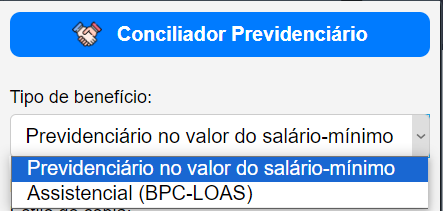

Extensão do Chrome - Conciliador Previdenciário
A Extensão do Chrome Conciliador Previdenciário é uma ferramenta projetada para auxiliar no cálculo de valores de acordos judiciais e extrajudiciais, a partir de arquivos JSON contendo dados relevantes para a conciliação.
Funcionalidades Principais
Escolha de Benefício: Permite ao usuário selecionar o benefício (atualmente, benefícios no valor do salário-mínimo ou BPC-LOAS) a partir de uma caixa de seleção. O plugin carrega os dados do arquivo JSON correspondente ou de um arquivo personalizado, se assim configurado.
Escolha de Formato de Saída (Estilo de cópia): Oferece ao usuário a opção de escolher o conteúdo a ser copiado para a área de transferência (parâmetros pré-formatados, parâmetros sem formatação ou apenas o valor total da proposta).
Entrada de DIP e DIB: Solicita ao usuário inserir a Data de Início do Pagamento (DIP) e a Data de Início do Benefício (DIB) no formato DD/MM/AAAA para realizar a busca correspondente nos dados carregados. No momento, os dados são limitados às seguintes datas: DIB a partir de 01/01/2018 e DIP no primeiro dia do mês atual e dos dois últimos meses.
Percentual de acordo: Após selecionar o benefício e inserir a DIP e a DIB, escolha o percentual de acordo a ser aplicado.
Processamento de Dados: Após selecionar o benefício e inserir a DIP e a DIB e o percentual, o sistema calcula o valor do acordo e exibe os resultados na interface.
Cópia para Área de Transferência: O plugin copia as informações correspondentes para a área de transferência, permitindo fácil inserção em documentos externos.

Geração de Resumo em HTML: Permite a criação de um arquivo HTML com o resumo dos cálculos, que inclui o número do processo e o nome do benefício. O usuário deve fornecer o número do processo (20 dígitos) e o nome do benefício para gerar o resumo.
Configurações Personalizadas: Possibilidade de salvar configurações personalizadas, como a origem dos dados e arquivos JSON específicos para diferentes benefícios, que são carregados automaticamente em usos futuros. Veja abaixo o formato dos arquivos aceitos. Ver abaixo.
Armazenamento Local: Utiliza o armazenamento local do navegador para salvar as últimas DIP, DIB, percentual de acordo, benefício selecionado, e estilo de cópia, proporcionando uma experiência contínua mesmo após o fechamento da extensão.
Instalação
Pré-requisitos
- Google Chrome
Passos
- Acesse o link da extensão na Chrome Web Store.
- Clique no botão “Usar no Chrome”.
- Para melhorar a experiência de uso, fixe o plugin na barra de extensões do seu navegador.
Uso
Escolher Benefício: Selecione o benefício (RURAL ou BPC-LOAS) na caixa de seleção. O plugin carregará automaticamente os dados do arquivo JSON correspondente ou do arquivo personalizado, se configurado.
Inserir DIP e DIB: Digite a Data de Início do Pagamento (DIP) e a Data de Início do Benefício (DIB) no formato DD/MM/AAAA nas caixas de entrada.
Escolher Estilo de Cópia: Selecione o formato de saída desejado na caixa de seleção.
Calcular e Copiar: Clique no botão “CALCULAR E COPIAR” para iniciar o processamento. Os resultados serão exibidos na caixa do plugin e copiados para a área de transferência, conforme os parâmetros escolhidos.
Gerar Resumo HTML: Clique no botão “GERAR RESUMO HTML” para criar um arquivo HTML com o resumo dos cálculos. Para usar esta opção, o usuário deverá digitar um número de processo judicial, com 20 dígitos (padrão CNJ) e o nome do benefício a ser incluído no resumo.
Configurar Origem dos Dados: Acesse a página de configurações clicando no ícone de engrenagem na interface principal do plugin para escolher entre usar os dados padrão ou personalizar os arquivos JSON a serem utilizados. Atenção: o ícone da engrenagem está oculto. Passe o mouse para vê-lo.
- Origem Padrão: Selecione a opção “Padrão (recomendada)” para usar os arquivos JSON localizados na pasta
jsondo plugin.
- Origem Personalizada: Selecione a opção “Personalizada” para carregar arquivos JSON de caminhos personalizados. Você pode selecionar os arquivos JSON específicos para os benefícios RURAL e BPC-LOAS. Os arquivos devem seguir a mesma estrutura padrão descrita abaixo.
[personal]](image-2.png)
- Origem Padrão: Selecione a opção “Padrão (recomendada)” para usar os arquivos JSON localizados na pasta
Armazenamento Automático: As últimas DIP, DIB, percentual de acordo, benefício selecionado, e estilo de cópia são armazenados automaticamente para facilitar o uso futuro. Dessa maneira, não é necessário escolher todos os parâmetros entre as sessões de uso.
Estrutura dos Arquivos JSON Aceitos
Os arquivos JSON utilizados pelo plugin devem seguir a estrutura abaixo:
{ "metadata": {
"data_atualizacao": "2024-08-08",
"autoria": "Fulano de Tal",
"origem": "Intranet",
"versao": "1.0",
"descricao": "Planilha tal"
},
"dados": [
{
"dip": "01/01/2020",
"dib": "01/01/2019",
"rmi": "1045.00",
"p_ant": "5",
"p_atual": "12",
"v_ant": "5225.00",
"v_atual": "12540.00",
"soma": "17765.00"
},
{
"dip": "01/02/2020",
"dib": "01/02/2019",
"rmi": "1100.00",
"p_ant": "4",
"p_atual": "11",
"v_ant": "4400.00",
"v_atual": "12100.00",
"soma": "16500.00"
}
]
}Clique aqui para baixar um exemplo de arquivo JSON. Para converter arquivos .xlsx e outros para .json, há diveras opções disponíveis, como por exemplo:
- https://tableconvert.com/excel-to-json
- https://products.aspose.app/cells/conversion/xlsx-to-json
- https://products.groupdocs.app/conversion/xlsx-to-json
Explicação dos Campos:
- dip: Data de Início do Pagamento no formato DD/MM/AAAA.
- dib: Data de Início do Benefício no formato DD/MM/AAAA.
- rmi: Renda Mensal Inicial.
- p_ant: Número de parcelas de exercícios anteriores ao ano corrente.
- p_atual: Número de parcelas do exercício corrente.
- v_ant: Valor total das parcelas de exercícios anteriores.
- v_atual: Valor total das parcelas do exercício corrente.
- soma: Valor total do acordo.
Contribuições e Problemas
Se encontrar algum problema ou tiver sugestões de melhorias, mande um e-mail para o desenvolvedor (igormendonca.jus@gmail.com).
Autor
Desenvolvido por Igor Mendonça Cardoso Gomes
Advertência
O desenvolvedor não se responsabiliza pela exatidão dos cálculos, que devem ser conferidos pelo usuário.
Licença
Copyright (todos os direitos reservados)